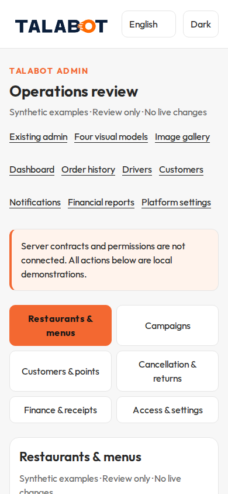
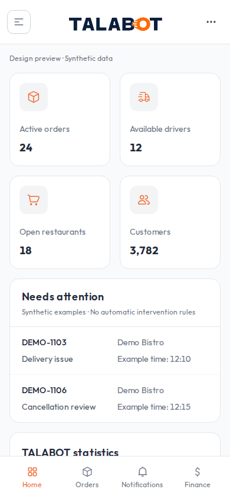

استعادة مدخل TALABOT Admin الأصلي
مقارنة 390 × 844 بكسل، الإنجليزية والوضع الفاتح. صور جديدة من Chromium وليست إثباتاً لاختبار Safari على جهاز فعلي. اضغط الصورة لفتحها وتكبيرها.
الخطأ كان تسليم صفحة Operations Review كمدخل للتطبيق. ملفات الواجهة الأصلية بقيت مطابقة؛ أُعيد توجيه الرابط القديم إلى الرئيسية، وحُفظت النماذج في مسار منفصل. الاسترجاع ينتظر موافقة المالك البصرية.
قبل التصحيح — المدخل التجريبي المرفوض
بعد التصحيح — رئيسية الإدارة الأصلية
المرجع — الرئيسية المنشورة سابقاً على Cloudflare
Source reference: 828a0d2006e2e39d5777b9b0969c244081ce0773
Original UI unchanged in ed5e33af0f4f1d9b5d4a54c25444a2e8b5916395 and takeover source.